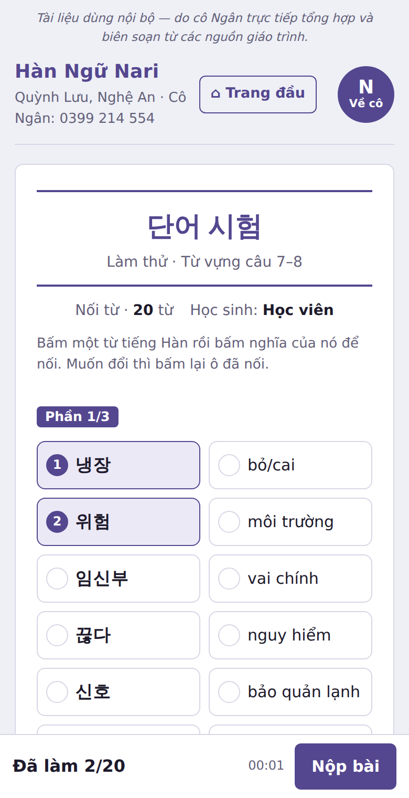
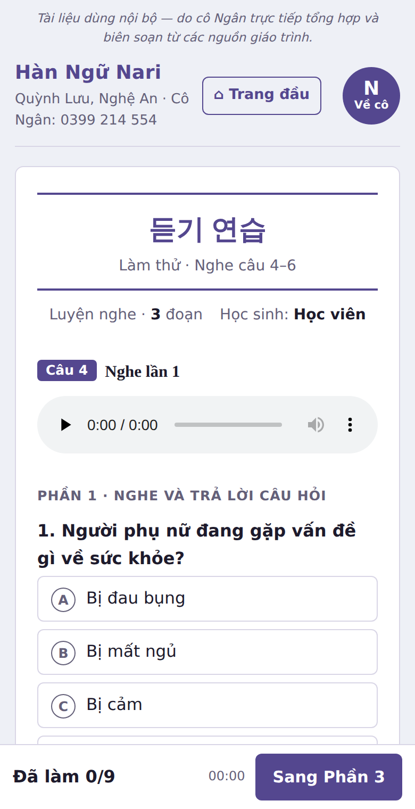
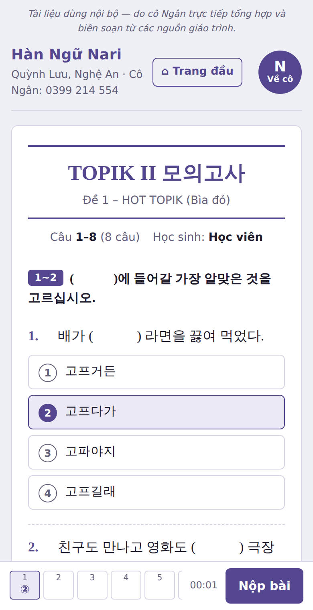

한국어능력시험 · TOPIK II
Trên lớp, cô dạy chiến thuật theo từng dạng đề. Ở nhà, mỗi ngày em làm 3 bài ngắn trên điện thoại. Câu nào em sai, cô đều ghi lại và cho em ôn đến khi làm đúng.
Hơn 20 năm gắn bó với tiếng Hàn, cô thấy nhiều bạn học trên lớp thì hiểu, nhưng về nhà không luyện, hoặc luyện lan man mà không biết mình yếu ở đâu.
Vì vậy cô tự xây hệ thống luyện tập riêng cho học viên của cô. Cô nhập đề, soạn kho từ vựng theo từng dạng câu thi, chọn đề nghe TOPIK thật và chép lời thoại kèm bản dịch. Mỗi ngày em có bài vừa sức, còn cô thì biết em đang sai ở đâu để giúp đúng chỗ đó.
Cô Thủy Ngân · Hàn Ngữ Nari
Ba bài ngắn, làm bằng điện thoại hay máy tính đều được. Cô gửi link qua Zalo, em bấm vào là làm.



Đây là điều cô tâm đắc nhất: em không chỉ làm bài cho xong, mà mỗi lỗi sai đều được xử lý.
Kết quả: em biết chính xác mình còn hổng chỗ nào và vá đúng chỗ đó, không phải học lại những gì đã biết.
Phù hợp cả với bạn ít thời gian, muốn bỏ qua giáo trình trung cấp 3, 4 để vào luyện đề luôn.
Em không cần đăng ký. Bấm link là làm được.
Zalo cô: 0399 214 554